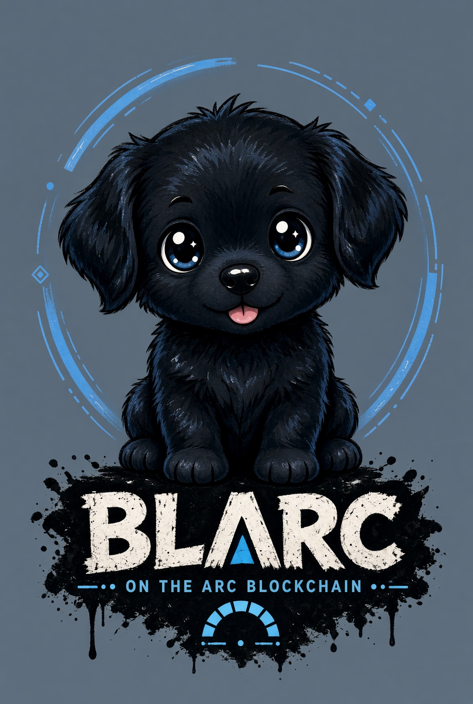
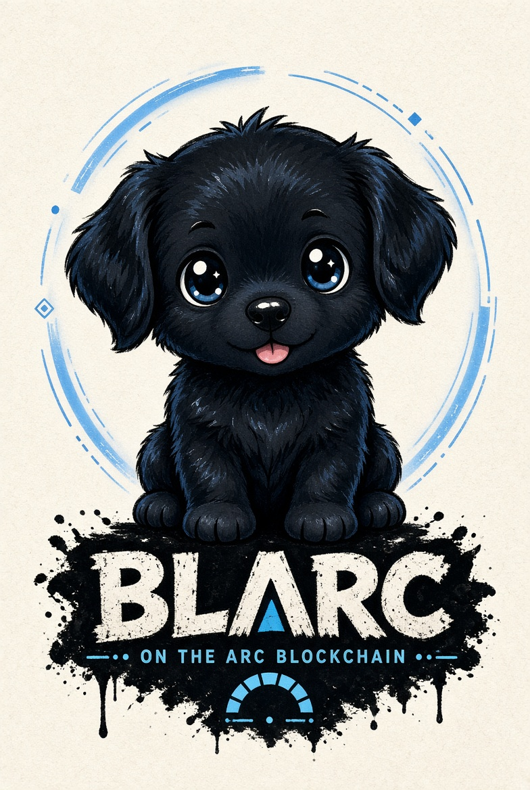
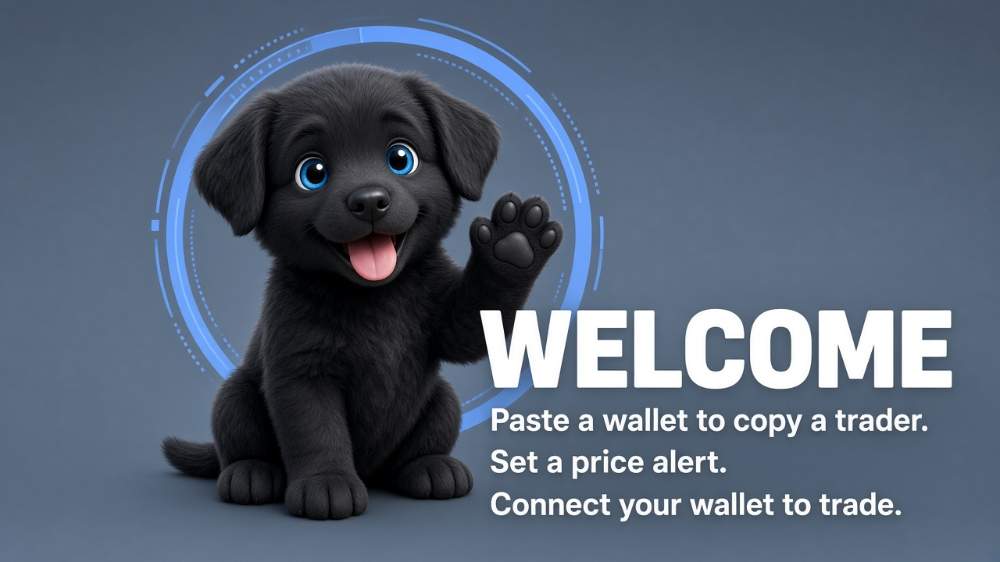
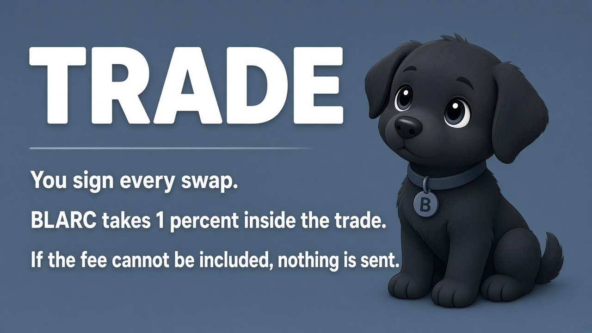
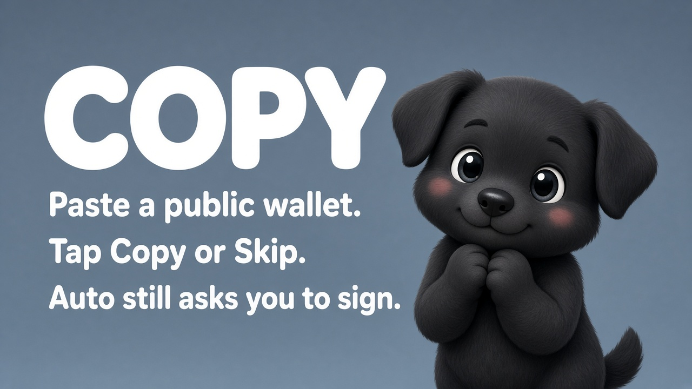

Quick swaps
Swap on Solana, Robinhood Chain, and other EVM chains. Tap the tokens and amount, then sign.
Live on Telegram
BLARC puts quick swaps, copy trading, price alerts, and token scans behind a few taps in Telegram. Your keys stay in your wallet, and every trade waits for your signature.

The bot
Send /start once and BLARC opens a home menu of buttons. Pick the token to
sell, the token to buy, and an amount, then confirm. Every screen has Back and Home, so
you never get lost.
You only type when a button can't do the job: a custom token or amount, a trader's wallet to copy, or a price target for an alert.
Features
Swap on Solana, Robinhood Chain, and other EVM chains. Tap the tokens and amount, then sign.
Watch any public wallet. When it trades, you get one-tap Copy or Skip.
Set above or below targets and get a Telegram ping when price crosses them.
Keep the tokens you care about in one list with their latest USD price.
Paste a contract to see liquidity, volume, and pair age on a clean card.
Set a weekly goal and a risk tier. Auto mode prepares trades but still asks you to sign.
Connect any wallet with WalletConnect, or create a new one. The seed is shown once, then forgotten.
Plain Node with a Docker setup, so other teams can run BLARC for their own groups.
Built to extend
BLARC is designed to extend into an AI-assisted community moderator for other projects: admin announcements, official-link and anti-phishing replies, and a portable Docker setup any team can run in its own Telegram group.

How it works
Start @theBLARCbot in Telegram.
Link your wallet with WalletConnect, or create a fresh one in the bot.
Pick what to sell, what to buy, and how much.
Review and sign. BLARC never signs for you.



Security
BLARC only knows your public address. Trades are requested through WalletConnect and signed by you. If something can't be prepared safely, nothing is sent.
BLARC holds no private keys and cannot move funds on its own.
Pair the wallet you already use. Each trade is a request you approve or reject.
A wallet created in the bot shows its recovery phrase one time, then it is forgotten. Only the public address is kept.
Official links live in the bot's Support screen. BLARC will never ask for your seed phrase, private key, or login code.
FAQ
No. You sign every trade in your own wallet. BLARC stores public addresses only.
Solana, Robinhood Chain, and a set of EVM chains including Ethereum, Base, Arbitrum, BNB Chain, Optimism, Polygon, and Avalanche.
No. Auto prepares the trade and still asks you to sign it. No connected wallet means no trade.
A small fee is included inside each swap you sign. The bot's About and Guide screens have the details.
Your seed phrase, private keys, recovery codes, or Telegram login codes. Not in chat, not with support, not with anyone.